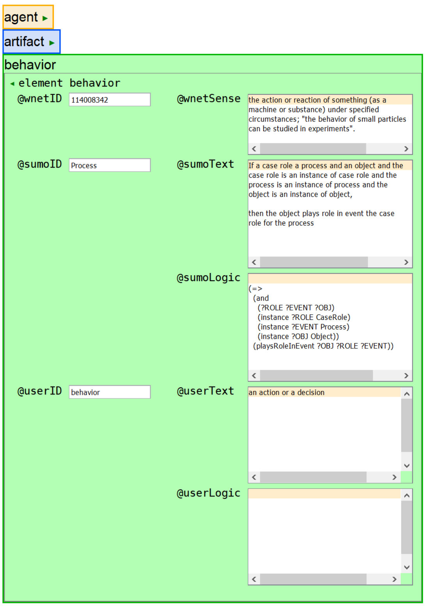

The draft implementation uses prodoc's document-level extension mechanism to add global attributes a test document:
Figure 33. Semantic formalization attribute list
<!-- ren to fsem.atl when generalized -->
<!ENTITY % sa.atl
"
shsem (show| hidden) #IMPLIED
sumoID CDATA #IMPLIED
sumoLogic CDATA #IMPLIED
sumoText CDATA #IMPLIED
userID CDATA #IMPLIED
userLogic CDATA #IMPLIED
userText CDATA #IMPLIED
wnetID CDATA #IMPLIED
wnetSense CDATA #IMPLIED
" >
The approach was tested with the concepts <agent/>, <artifact/>, and <behavior/>. The @shsem attribute controls the expansion and collapsing of the associated form control that provides access to the WordNet and SUMO attributes set.
Figure 34. Elements mapped to WordNet definitions and SUMO logic
|  |